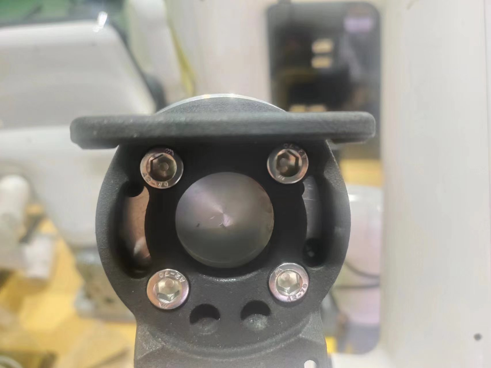
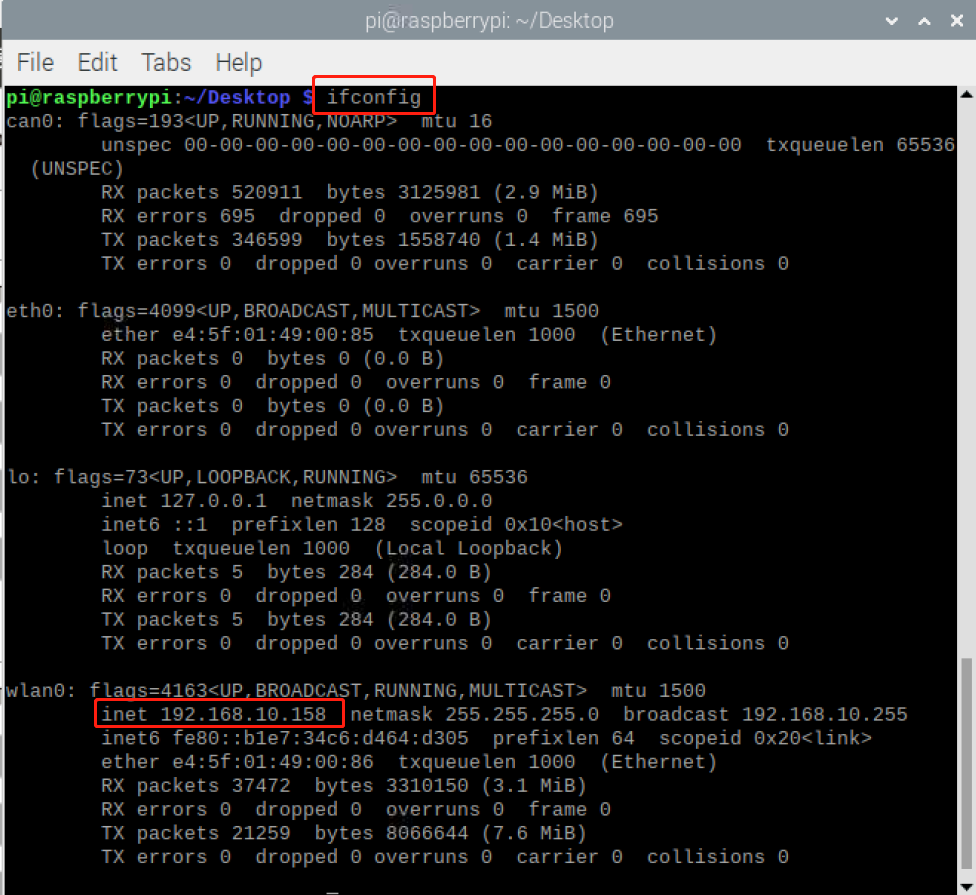
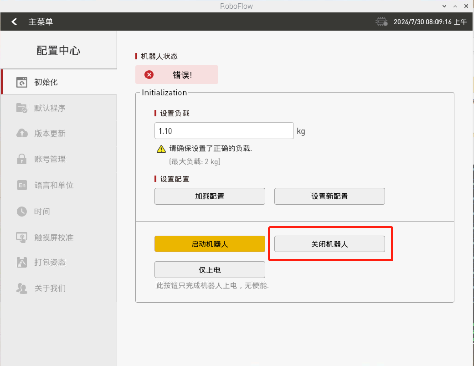

myCobotPro 自适应夹爪
兼容型号： myCobot 320、myCobot Pro 630、myCobot Pro 600、myCobot Pro 450
产品图片

规格
| 名称 | myCobotPro 自适应抓取器 黑白款 |
|---|---|
| 材料 | 光敏树脂 + 尼龙 |
| 工艺技术 | 3D 打印 |
| 夹取范围 | 0-90 mm |
| 夹紧力 | 1000 grams |
| 驱动模式 | 电驱动 |
| 变速箱模式 | 齿轮+连接杆 |
| 尺寸 | 158x105x55mm |
| 重量 | 350 grams |
| 固定方法 | 螺丝固定 |
| 使用环境要求 | 常温常压 |
| 控制接口 | 串行端口/IO 控制 |
| 适用设备 | myCobot 320 系列、 myCobot Pro 630、 myCobot Pro 600、myCobot Pro 450 |
用于抓取物体
引言
机械手是一种能像人手一样工作的机器人部件。它具有结构复杂、抓取物体牢固、不易掉落、操作简便等优点。
抓手套件包括抓手连接线和法兰，通过可编程系统控制机械臂的末端效应器，实现抓取物体和多点定位等功能。抓手可用于所有开发环境，如 ROS、Arduino、Roboflow 等。
工作原理
- 在电机的驱动下，机械手的手指表面做直线往复运动，实现打开或关闭动作。电动机械手的加减速可控，对工件的冲击最小，定位点可控，夹紧可控。
适用对象
小方块
小球
长条物体
安装使用
夹爪安装：
结构安装：
将垫片对准机械臂末端孔位，配合螺丝拧紧： 
将夹爪的螺丝孔对准垫片四周的孔位，配合细螺丝拧紧：


电气连接：

注意在机械臂不上电的状态下进行，即末端绿灯不亮的情况下进行插拔，如果带电热插拔，会有损坏夹爪的风险。
- 将 m8 线对准机械臂的接口，注意接口处有缺口，连接线有对应突起，确认方向后插入，并拧紧：

- 插入夹爪控制接口，同样注意缺口的方向：

- 将 m8 线对准机械臂的接口，注意接口处有缺口，连接线有对应突起，确认方向后插入，并拧紧：
python编程控制
需要先使用roboflow将机械臂使能，再运行下面的python脚本内容，测试夹爪是否正常


确认机械臂的IP地址：终端输入 ifconfig 获取 
IO控制模式
from pymycobot import ElephantRobot
import time
# 将ip更改成P600树莓派的实时ip
elephant_client = ElephantRobot("192.168.10.158", 5001)
# 启动机器人必要指令
elephant_client.start_client()
time.sleep(1)
elephant_client.set_gripper_mode(1)
time.sleep(1)
elephant_client.power_off()#夹爪透传换IO模式时需要先关闭机器再重启机器人一次，仅使用夹爪透传模式不必关闭机器人
elephant_client.power_off()
time.sleep(3)
elephant_client.state_off()
time.sleep(3)
elephant_client.power_on()
time.sleep(3)
elephant_client.state_on()
time.sleep(3)
elephant_client.set_digital_out(16, 0) # IO恢复低电平
time.sleep(1)
elephant_client.set_digital_out(17, 0) # IO恢复低电平
time.sleep(1)
# IO模式
#夹爪全开全闭合控制代码，注意在夹爪透传切换IO模式时需要先关闭机器再重启机器人一次，才能切换回夹爪IO模式
for i in range(3):
elephant_client.set_digital_out(16, 1) # 闭合夹爪
time.sleep(1)
elephant_client.set_digital_out(17, 0) # IO恢复低电平
time.sleep(1)
elephant_client.set_digital_out(16, 0) #IO恢复低电平
time.sleep(1)
elephant_client.set_digital_out(17, 1) # 打开夹爪
time.sleep(1)
elephant_client.set_digital_out(16, 0) # IO恢复低电平
time.sleep(1)
elephant_client.set_digital_out(17, 0) # IO恢复低电平
time.sleep(1)
透传模式
from pymycobot import ElephantRobot
import time
# 将ip更改成P600树莓派的实时ip
elephant_client = ElephantRobot("192.168.10.158", 5001)
# 启动机器人必要指令
elephant_client.start_client()
time.sleep(1)
elephant_client.set_gripper_mode(0)
time.sleep(1)
# elephant_client.power_off()#夹爪透传换IO模式时需要先关闭机器再重启机器人一次，仅使用夹爪透传模式不必关闭机器人
elephant_client.state_off()
time.sleep(3)
elephant_client.power_on()
time.sleep(3)
elephant_client.state_on()
time.sleep(3)
#透传模式
for i in range(3):
elephant_client.set_gripper_value(26,20)
time.sleep(1)
elephant_client.set_gripper_value(86,20)
time.sleep(1)
夹爪零位校准
夹爪出厂时已做过零位校准，若夹爪的行程不对，可以按照下面操作进行校准
在roboflow先关闭机器人，手动将夹爪张开到最大 
然后再启动机器人
然后再执行下面脚本
from pymycobot import ElephantRobot
import time
# 将ip更改成P600树莓派的实时ip
elephant_client = ElephantRobot("192.168.10.158", 5001)
# 启动机器人必要指令
elephant_client.start_client()
time.sleep(1)
elephant_client.set_gripper_mode(0)
time.sleep(1)
elephant_client.set_gripper_calibrate()
time.sleep(1)